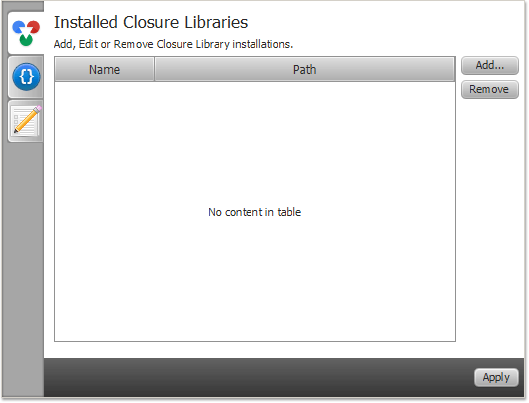
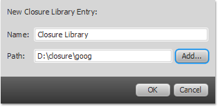
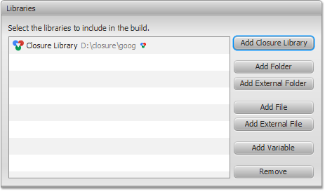

Closure Library
In this section, you will learn about configuring Closure Library in Closure FX Builder.
The build path for a JavaScript project can include folders
containing JavaScript files.
Closure Library is a folder with the library's files to include in the build. Closure FX Builder allows you to avoid references to the location of the library's folder on your local file system. In this way, you can share build paths across teams and define the Closure Library to refer to the correct location for your particular computer.
Closure Library is a folder with the library's files to include in the build. Closure FX Builder allows you to avoid references to the location of the library's folder on your local file system. In this way, you can share build paths across teams and define the Closure Library to refer to the correct location for your particular computer.
Configure Closure Library
You can define any number of Closure Library definitions.
Therefore, you can use different versions or custom builds of the
library.
- Click
 Settings
button to open Closure FX Preferences
dialog.
Settings
button to open Closure FX Preferences
dialog.
- Select Installed Closure
Libraries tab.
 - Click Add... button to open Add Closure Library dialog.
- Enter the library's name of your choose. For example: Closure Library
Click Add... button and locate to the goog folder inside Closure Library installation directory: ~/closure/goog
 - Click OK and then Apply button to save configured library.
- Go to your build configuration and choose Build Path tab on Compiler page.
- Click Add Closure Library in the Libraries section.
- Choose the library and click OK.

Notice triangle next to the library's path.
The triangle defines that the builder will look for the JavaScript files with goog.provide only.
The triangle defines that the builder will look for the JavaScript files with goog.provide only.